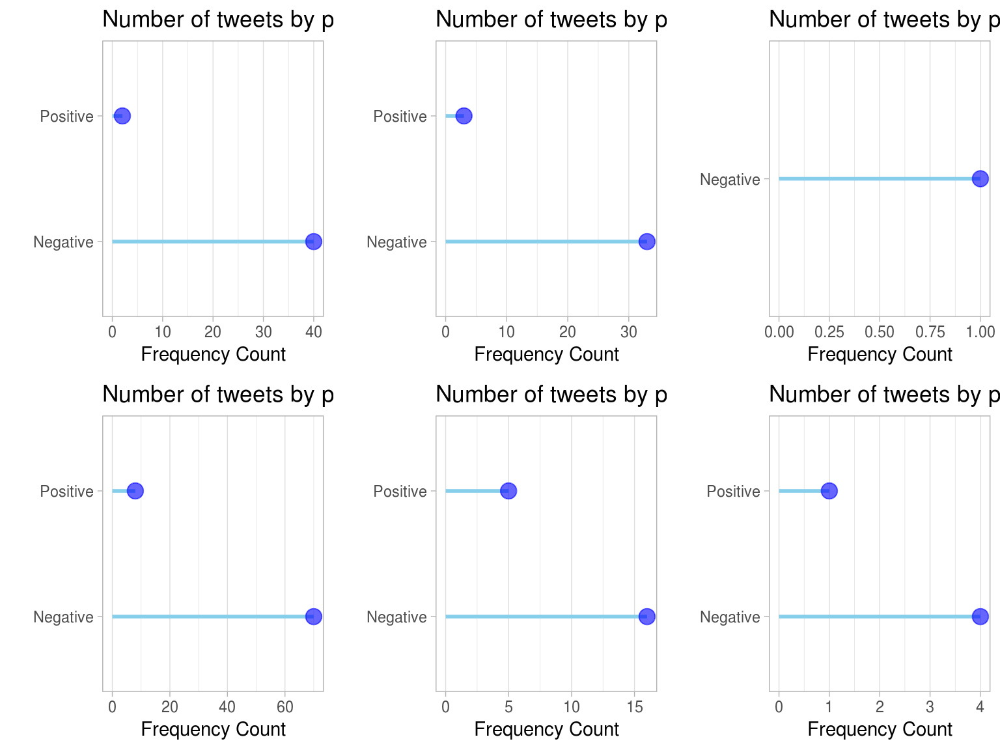
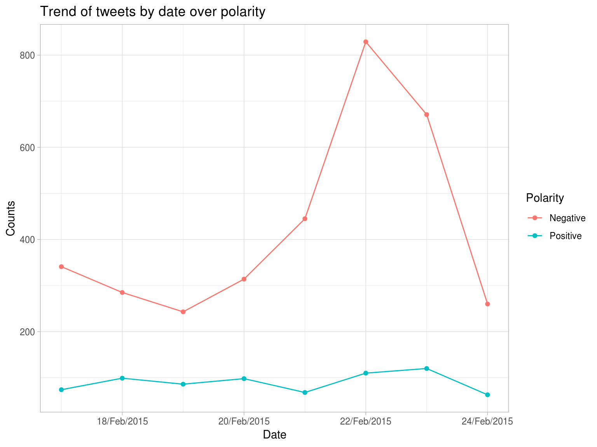
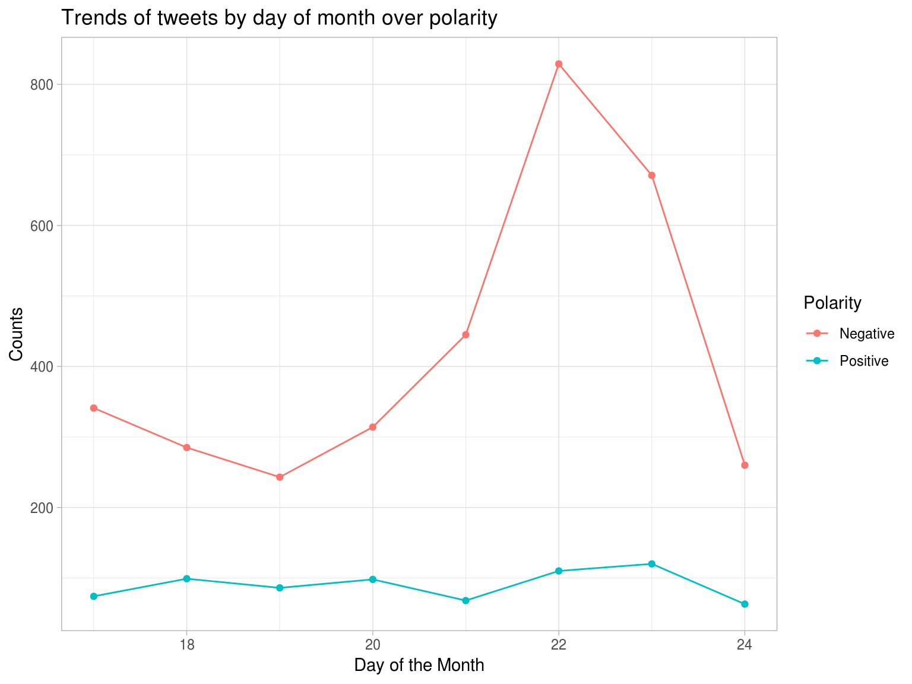
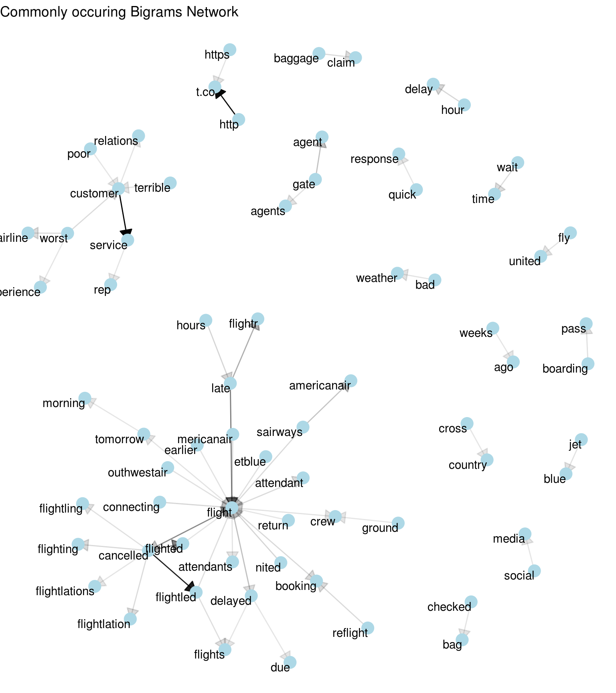

vignettes/twitter-airline-sentiment.Rmd
twitter-airline-sentiment.RmddeepSentimentR package will enable its users to Query, View and Analyze Sentiment datasets, for example the Sentiment140 Dataset. By default it works on the sentiment140 tweet data set, however, user can provide any other data set too. In general, it supports the following features -
In order to demonstrate the power of this package, lets pretend to be John, a junior Data Scientist at Alaska Airlines, who is tasked to analyze the user sentiments of it’s competition over twitter. John follows the standard “OSEMN” model to accomplish this goal.
John finds the following “Twitter Airline Sentiment” dataset on - data.world
In this step, John does the following -
airlines = readr::read_csv("https://query.data.world/s/aa2xuctpx2ahuwrnljrwy37d4idlup",
col_types = readr::cols(.default = readr::col_character()))
airlines %>%
mutate(airline_sentiment_confidence = as.numeric(`airline_sentiment:confidence`)) %>%
filter(airline_sentiment_confidence >= 0.8,
airline_sentiment != "neutral",
!is.na(user_timezone),
stringr::str_detect(user_timezone, "US & Canada")) %>%
select(airline_sentiment, tweet_id, tweet_created, airline, name, text) %>%
mutate(tweet_created = lubridate::mdy_hm(tweet_created),
airline_sentiment = ifelse(airline_sentiment == "negative", 0, 4)) %>%
rename(polarity = airline_sentiment,
id = tweet_id,
date = tweet_created,
query = airline,
user = name) -> airlinesScrubbing the data would be the next step for John for use in further steps (all of them present in the data-raw folder of the git hub repo) -
As in github repo: “data-raw/DATASET.R”
filter_and_sub_sample_data <- function(data, data_size=50000) {
data <- data %>%
filter(stringi::stri_enc_mark(.data$text) == "ASCII") %>%
mutate(text = stringr::str_replace(text, "&\\w+;", ""),
text = stringr::str_replace(text, "^\\s+|\\s+$", ""),
text = stringr::str_replace(text, "\\s+", " "),
text = stringr::str_replace(text, "[^:|[:punct:]+]", ""),
text = stringr::str_replace(text, " [^[:alnum:]+] ", " ")) %>%
filter(nchar(text) > 20,
polarity != 2) %>%
mutate(polarity = ifelse(polarity == 4, "Positive", "Negative"))
if (dim(data)[1] < data_size) {
data_size = dim(data)[1]
}
set.seed(314159)
data <- data %>%
sample_n(data_size)
return(data)
}airlines <- airlines %>% filter_and_sub_sample_data()
airlines %>%
glimpse()
#> Observations: 4,106
#> Variables: 6
#> $ polarity <chr> "Negative", "Positive", "Negative", "Positive", "Negati…
#> $ id <chr> "5.6779E+17", "5.679E+17", "5.67812E+17", "5.69161E+17"…
#> $ date <dttm> 2015-02-17 12:57:00, 2015-02-17 20:14:00, 2015-02-17 1…
#> $ query <chr> "United", "Delta", "US Airways", "Southwest", "Southwes…
#> $ user <chr> "Tony_Ciccolella", "mypumpkinheads", "btr5017", "DianeF…
#> $ text <chr> "@nited you'd learn if you listen to your customers...y…John sets out to begin an initial exploration of the data by finding answers to the following questions:
The general sentiment for each of the 6 airlines can be seen using freq_by_polarity function -
united <- deepSentimentR::freq_by_polarity(data = airlines, keyword_list = c("@united"))
USAirways <- deepSentimentR::freq_by_polarity(data = airlines, keyword_list = c("@USAirways"))
southwestair <- deepSentimentR::freq_by_polarity(data = airlines, keyword_list = c("@southwestair"))
AmericanAir <- deepSentimentR::freq_by_polarity(data = airlines, keyword_list = c("@AmericanAir"))
JetBlue <- deepSentimentR::freq_by_polarity(data = airlines, keyword_list = c("@JetBlue"))
VirginAmerica <- deepSentimentR::freq_by_polarity(data = airlines, keyword_list = c("@VirginAmerica"))gridExtra::grid.arrange(united$plot,
USAirways$plot,
southwestair$plot,
AmericanAir$plot,
JetBlue$plot,
VirginAmerica$plot,
nrow = 2,
ncol = 3)
Overall, Virgin America has the most balanced number of Positive vs. Negative Tweets and United airlines has the most imbalanced (no surprise there).
Lets see how dates and day of the month correlate to polarity using time_series. Can it be correlated with any public news.
time_series_results <- deepSentimentR::time_series(data = airlines)
show(time_series_results$plot_date)
 We see a general increase in number of negative tweets from 19th till 23rd Feb 2015. A simple search on Google reveals several bad press articles relating to that near that time -
- [United Airlines](https://www.bbc.com/news/world-us-canada-31439656)
- [Southwest Airlines](https://www.bbc.com/news/business-31629480)
Although how much of this negativity can be attributed to the above 2 example news reports is a topic for another day.We can use the bigram_network function to view the bigram network:
bigram_network_results <- deepSentimentR::bigram_network(data = airlines, counts_quantile = 0.99)
show(bigram_network_results$plot)
The most common bigrams are also the most obvious ones that can be seen in the above plot like - “customer service” has a very high count (darker arrow), similarly for “cancelled flight” and “boarding pass”. We can also see phrase patterns emerge like - “terrible customer service” or “worst customer relations”.
After all that exploration, John sets out to build a model to predict the polarity of tweets using just the text of the tweet (for now)
We use 1-D Convolutional Network and LSTM RNN model using Keras and with/without Glove Embeddings to train and predict the polarity of the tweet. Given the small number of samples in our airlines dataset (i.e. 4106 obs.), we can use train_lstm_glove or train_conv_1d_with_glove functions to train a deep neural network, LSTM based Recurrent Neural Network or 1-D Convolutional Network respectively along with pre-trained Glove Embeddings provided by NLP research group in Stanford, (https://nlp.stanford.edu/projects/glove/).
deepSentimentR::train_lstm_with_glove(data = airlines,
glove_file_path = "~/Downloads/glove.6B.100d.txt",
model_save_path = "train_glove_lstm.rds")
deepSentimentR::train_conv1d_with_glove(data = airlines,
glove_file_path = "~/Downloads/glove.6B.100d.txt",
model_save_path = "train_glove_conv_1d.rds")We can also use train_lstm or train_conv_1d functions in this package to train deep neural networks, LSTM or 1-D Convolutional Network respectively which will train its own embeddings on the given dataset, although given the small size of the data it may not give as accurate results as compared to glove.
John can use the predict_polarity_keras function in this package which will run the given pre-trained DNN models to make predictions on the airlines dataset.
lstm_no_glove_results <- deepSentimentR::predict_polarity_keras(data = airlines)
lstm_glove_results <- deepSentimentR::predict_polarity_keras(data = airlines,
model_load_path = system.file("extdata",
"train_glove_lstm.rds",
package = "deepSentimentR",
mustWork = TRUE))
conv_1d_no_glove_results <- deepSentimentR::predict_polarity_keras(data = airlines,
model_load_path = system.file("extdata",
"train_no_glove_conv_1d.rds",
package = "deepSentimentR",
mustWork = TRUE))
conv_1d_glove_results <- deepSentimentR::predict_polarity_keras(data = airlines,
model_load_path = system.file("extdata",
"train_glove_conv_1d.rds",
package = "deepSentimentR",
mustWork = TRUE))preds_result <- tibble(model = c("LSTM without Glove Embeddings",
"LSTM with Glove Embeddings",
"1-D Convolutional Network without Glove Embeddings",
"1-D Convolutional Network with Glove Embeddings"),
accuracy = c(lstm_no_glove_results$accuracy,
lstm_glove_results$accuracy,
conv_1d_no_glove_results$accuracy,
conv_1d_glove_results$accuracy))
preds_result
#> # A tibble: 4 x 2
#> model accuracy
#> <chr> <dbl>
#> 1 LSTM without Glove Embeddings 0.806
#> 2 LSTM with Glove Embeddings 0.781
#> 3 1-D Convolutional Network without Glove Embeddings 0.743
#> 4 1-D Convolutional Network with Glove Embeddings 0.706As we can see above, the pre-trained LSTM model without using Glove Embeddings gives the best prediction results for our airlines dataset with an accuracy of about 80.56%.
Based on all the above functionalities provided by our package, John can efficiently and extensively carry out his task of sentiment analysis for his company.